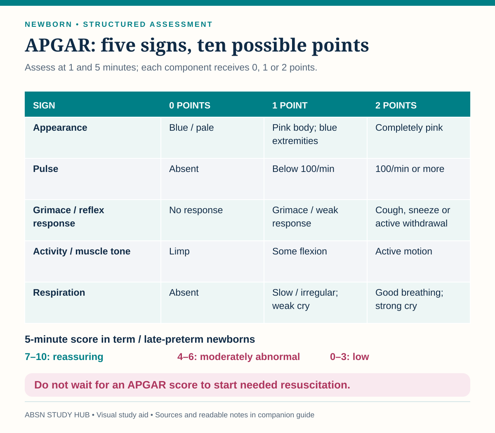

Scoring the first minutes, and the two bits of newborn care parents ask the most questions about.
The Apgar score describes how the baby is doing. It does not decide what you do about it. Resuscitation starts on assessment, not on a score. Nobody waits until one minute to dry, warm and stimulate a baby who is not breathing.
Five things, 0 to 2 each, at 1 minute and 5 minutes — and again at 10 minutes if the five-minute score is under 7.
| Sign | 0 | 1 | 2 |
|---|---|---|---|
| Heart rate | Absent | Under 100 | Over 100 |
| Respiratory effort | Absent | Slow, weak, irregular | Good cry |
| Muscle tone | Limp | Some flexion | Active movement |
| Reflex irritability | No response | Grimace | Cry, cough or sneeze |
| Color | Blue or pale all over | Body pink, hands and feet blue | Pink all over |

Sources checked October 3, 2026:
Clean and dry, and left alone. It usually separates somewhere between 7 and 14 days.
The cord should have two arteries and one vein. A single artery is noted and reported — it can go with other anomalies.
Report to the provider: redness spreading onto the abdomen, a foul smell, pus, bleeding more than a spot, or a fever. Those are omphalitis, and in a newborn that becomes serious quickly.
| Clamp method (Gomco, Mogen) | Plastibell |
|---|---|
| Apply petroleum jelly on gauze with each diaper change | No petroleum jelly — it makes the ring slip |
| Keeps the raw area from sticking to the diaper | The plastic ring falls off by itself in about 5–10 days |
Both: clean with warm water at each change, fasten the diaper loosely, and lay him on his back or side rather than on his front.
A yellowish film over the site around day two is normal healing granulation. Tell the parents before they see it, and tell them not to wash it off.